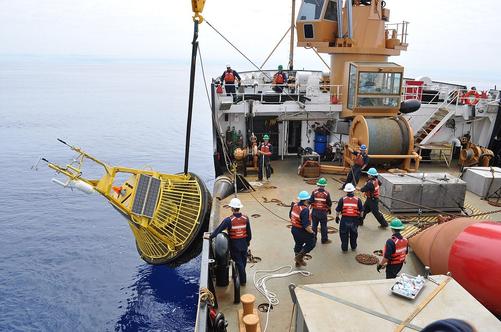
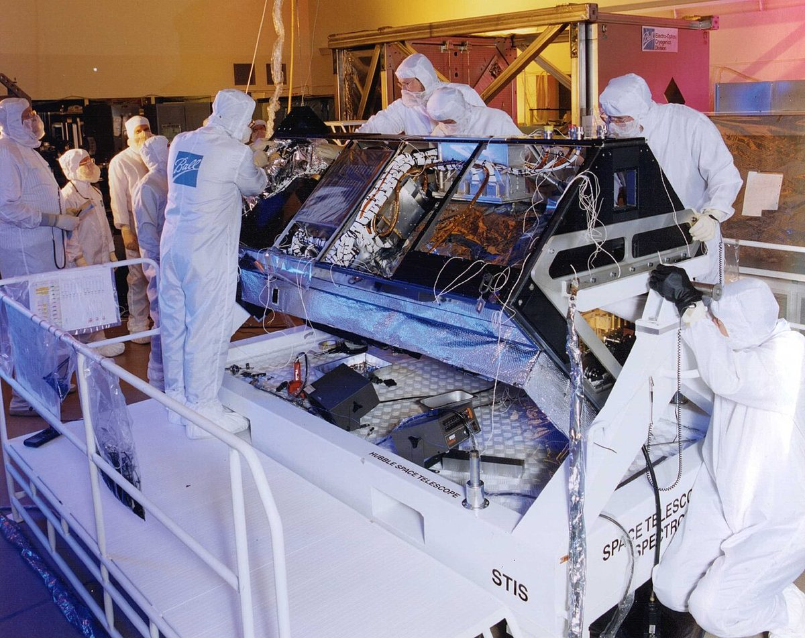

MorphoNerva, Inc. is an early-stage engineering R&D company building neuromorphic, event-driven computing systems for edge and scientific workloads. We design the full stack together: spiking neural network models, the software that builds and verifies them, and the digital hardware they run on. We start with FPGA prototypes and are working toward custom silicon.
“Most sensor data is quiet most of the time. Conventional processors do the same work on every clock tick anyway. Our systems are designed to do work only when something changes.”
Neuromorphic edge accelerator
A digital, event-driven neural processing core for always-on sensing. FPGA prototypes first, then custom silicon. In development.
OmniSim
Simulation and analysis for spiking models, built so that what you simulate is what the hardware computes. In development.
OmniSDK
Import, build and deploy spiking models, starting from the open NIR model format. In development.
Where it applies
Industrial monitoring · Audio sensing · Event cameras and robotics · Scientific and harsh-environment sensing.


Remote and harsh environments: wind turbines (U.S. Dept of Energy), ocean weather buoys (U.S. Coast Guard), space instruments (NASA). Public domain.